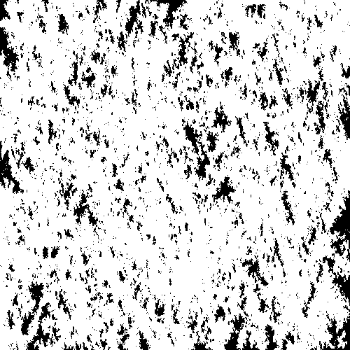

MaterialReconstruction.jl
MaterialReconstruction.jl package can be used to recreate binary arrays (also called two-phase systems in this documentation) from a set of descriptors known as correlation functions using a technique called simulated annealing. It works in conjunction with packages CorrelationFunctions.jl and CorrelationsTrackers.jl.
This package is quite configurable which means you can decide which correlation functions to take into account, which cooldown schedule to use etc.
Look at this minimal example to see how MaterialReconstruction.jl can be used:
using CorrelationFunctions
using CorrelationTrackers
using MaterialReconstruction
using Images
using FileIO
using Random
Random.seed!(123)
# Load a binary array we want to reconstruct
array = load("images/value-noise.png") .|> Bool
# Choose correlation functions we want to track (S2 for void phase, L2 for both phases)
functions = [S2Tracker(false), L2Tracker(false), L2Tracker(true)]
# Create an instance of CorrelationTracker type. Correlation functions are calculated
# with periodic boundary conditions.
target = CorrelationTracker(array; tracking = functions, periodic = true)
# Initialize an array to be reconstructed
system = CorrelationTracker(target |> initialize_spheres, target)
# Create an instance of Furnace. T0 is an initial temperature
furnace = Furnace(system, target; T0 = 2e-5)
# Choose a cost function.
# (More about Čapek cost function in the section "Cost functions")
cost = čapek_cost(system, target, 0.4)
# Choose a modifier (more in the section "Samplers and modifiers")
modifier = Flipper(InterfaceSampler())
# Choose a cooldown schedule (more in the section "Cooldown schedules")
cooldown = aarts_korst_cooldown(n = 100, λ = 0.01)
# Measure initial value of the cost function
cost1 = cost(target, system)
# This is a kludge used to work around impossibility of reassigning a variable
# in the loop in examples generated by Documenter.jl
function annealing_step!(f)
f[] = annealing_step(f[];
cost = cost,
modifier = modifier,
cooldown = cooldown)
end
# Run 5000 annealing steps. Usually you have to repeat this loop a few million times.
f = Ref(furnace)
for i in 1:5000
annealing_step!(f)
end
# Measure final value of the cost function
cost2 = cost(target, system)
cost1, cost2(0.08031552774628573, 0.05330782954198182)As you see, the cost function decreases after 5000 iterations of the process. More illustrative examples are in the section Examples. Each aspect of MaterialReconstruction.jl API is described in a dedicated section.
Cost functions
Cost functions are the functions which are minimized during simulated annealing. Usually, we have two binary arrays, one of them is fixed (the target array) and the other is changed during annealing. An annealing process stops when the value of the cost function becomes small enough which means two arrays are "similar" to each other. A cost function takes two CorrelationTracker objects (which are our arrays + a set of correlation functions calculated for those arrays) and returns a real number which specifies how similar those arrays are. Usually, this similarity is measured by comparing the values of correlation functions. The following cost functions are defined in this package:
MaterialReconstruction.euclid_mean — Functioneuclid_mean(data1 :: CorrelationData, data2 :: CorrelationData)
euclid_mean(data1 :: AbstractArray, data2 :: AbstractArray)Calculate squared euclidean distance between values of two correlation functions (represented as CorrelationData object) or two systems (represented as AbstractArray object). The values are averaged along all directions before calculation.
MaterialReconstruction.euclid_directional — Functioneuclid_directional(data1 :: CorrelationData, data2 :: CorrelationData)
euclid_directional(data1 :: AbstractArray, data2 :: AbstractArray)Calculate squared euclidean distance between values of two correlation functions (represented as CorrelationData object) or two systems (represented as AbstractArray object). The values calculated along different directions are not averaged and treated separately.
MaterialReconstruction.euclid_mean_weighted — Functioneuclid_mean_weighted(data1 :: AbstractArray, data2 :: AbstractArray)Calculate squared euclidean distance between values of two correlation functions (represented as CorrelationData object) or two systems (represented as AbstractArray object). The values are averaged along all directions before calculation.
Each correlation function has its own weight as described in Kirill M. Gerke and Marina V. Karsanina 2015 EPL 111 56002
MaterialReconstruction.euclid_directional_weighted — Functioneuclid_directional_weighted(data1 :: AbstractArray, data2 :: AbstractArray)Calculate squared euclidean distance between values of two correlation functions (represented as CorrelationData object) or two systems (represented as AbstractArray object). The values calculated along different directions are not averaged and treated separately.
Each correlation function has its own weight as described in Kirill M. Gerke and Marina V. Karsanina 2015 EPL 111 56002
MaterialReconstruction.čapek_cost — Functiončapek_cost(data1 :: AbstractArray, data2 :: AbstractArray, η = 0.6)Returns a function which calculates the cost based on two-point correlation function for void phase and lineal-path function for solid and void phases where contribution of the latter increases with time.
MaterialReconstruction.generalized_čapek_cost — Functiongeneralized_čapek_cost(tracker1, tracker2, dict)Returns a function which calculates the cost based on two-point and lineal-path functions for solid phase and any other functions present in keys(dict). dict is a dictionary which includes key-value pairs AbstractTracker => Float64. Values of dict must be in range [0, 1]. They control an initial contribution of the corresponding correlation function. The smaller these values are the smaller is the initial contribution. Contributions of all correlation functions equivalizes when the cost function becomes small.
Initialization
Before running simulated annealing, you must begin with some initial state. The following functions serve for creation of such state. An optional shape argument can be given to all of these functions to initialize array with a shape which is different from target's.
MaterialReconstruction.initialize_random — Functioninitialize_random(target :: AbstractArray[, shape])Initialize a system for the annealing procedure. The system is to be filled with random data in such a way that the porosity of the target is preserved.
MaterialReconstruction.initialize_spheres — Functioninitialize_spheres(target :: AbstractArray[, shape])Initialize a system for the annealing procedure. The system is to be filled with random spheres so its two-point correlation function for the void phase is as close as possible to the target's one.
Samplers and modifiers
Simulated annealing works by taking a random sample (or a few) from an array to be reconstructed, modifying it (them) and either accepting the modification or rejecting it. You can choose how exactly sampling and modification steps are performed by choosing one of existent AbstractModifier and AbstractSampler types or writing your own.
Samplers
Samplers are subtypes of AbstractSampler. They define how exactly a sample to be modified is chosen. There are three samplers in this package:
MaterialReconstruction.UniformSampler — TypeUniformSampler()Create a sampler which picks samples randomly with uniform distribution.
See also: AbstractSampler, InterfaceSampler, DPNSampler.
MaterialReconstruction.InterfaceSampler — TypeInterfaceSampler()Create a sampler which picks samples randomly from an interface between phases.
See also: UniformSampler, AbstractSampler, DPNSampler.
MaterialReconstruction.DPNSampler — TypeDPNSampler(array, α)Create a sampler which picks a random sample with $n$ different phase neighbors with probability $p \propto \alpha^n N(n)$ where $N(n)$ is a number of pixels having $n$ different phase neighbors in the system.
See also: UniformSampler, InterfaceSampler, AbstractSampler.
You can also write your own sampler type which must be a subtype of AbstractSampler and implement the following interface:
| Function name | Optional? | Default definition |
|---|---|---|
update_pre! | Yes | nothing |
update_post! | Yes | nothing |
sample | No |
The first two functions must only be implemented if you sampler has some state which must be updated when a reconstructed array is changed.
MaterialReconstruction.AbstractSampler — TypeAbstractSampler type is responsible for picking samples (voxels or pixels) during annealing process.
See also: UniformSampler, InterfaceSampler, DPNSampler.
MaterialReconstruction.update_pre! — Functionupdate_pre!(array, index, sampler)Update the state of sampler before the value array[index] is changed. Should only be implemented for stateful samplers.
MaterialReconstruction.update_post! — Functionupdate_post!(array, index, sampler)Update the state of sampler after the value array[index] is changed. Should only be implemented for stateful samplers.
MaterialReconstruction.sample — Functionsample(array, sampler)Get a random sample from the array. This function must return an index, e.g. CartesianIndex.
Modifiers
Modifier types are subtypes of AbstractModifier. They define how to modify samples returned from sample function. MaterialReconstruction.jl provides two modifier types:
MaterialReconstruction.Flipper — TypeFlipper(sampler)Create a modifier which changes phase of a sample taken from a binary array.
See also: AbstractModifier, Swapper.
MaterialReconstruction.Swapper — TypeSwapper(sampler)Create a modifier which takes two samples having different phases and swaps phases of these two samples.
See also: Flipper, AbstractModifier.
You can also implement your own modifier type subtyping AbstractModifier and implementing two methods: modify! and reject!.
MaterialReconstruction.AbstractModifier — TypeAbstractModifier type is responsible for how configuration update steps are performed during an annealing process.
MaterialReconstruction.modify! — Functionmodify!(array, modifier)Randomly modify the array. This function must return a state used in reject! to bring the array to a previous state if this modification is rejected.
MaterialReconstruction.reject! — Functionreject!(array, modifier, state)Bring the array back to the previous state.
Cooldown schedules
When a modification to a reconstructed array results in increase of the cost function a decision to either accept or reject that modification is taken according to the parameter called "temperature". The higher the temperature the higher the probability that the change is accepted. After each accepted modification the temperature decreases according to the cooldown schedule. There are three predefined schedules in MaterialReconstruction.jl:
MaterialReconstruction.exponential_cooldown — Functionexponential_cooldown(λ :: Float64)Create an exponential cooldown schedule. Temperature on step $n + 1$ is calculated as $T_{n + 1} = \lambda T_{n}$.
MaterialReconstruction.aarts_korst_cooldown — Functionaarts_korst_cooldown(;n = 15, λ = 0.01)Make the Aarts-Korst cooldown schedule. The temperature decreases each n steps of annealing algorithm. The higer λ is the faster decreases the temperature.
For more information, see Aarts, E.H.L. and Korst, J.H.M. (1989) Simulated Annealing and Boltzmann Machines: A Stochastic Approach to Combinatorial Optimization and Neural Computing. John Wiley & Sons, Chichester.
MaterialReconstruction.frost_heineman_cooldown — Functionfrost_heineman_cooldown(;n = 250, λ = 0.01)Make the Frost-Heineman cooldown schedule. The temperature decreases each n steps of annealing algorithm or until some "target" energy is reached. The target energy is based on standard deviation of the cost function and a parameter λ.
For more information, see R. Frost, P. Heineman "Simulated Annealing: A Heuristic for Parallel Stochastic Optimization" (1997)
Annealing
When an array you wish to reconstruct is initialized, a cooldown schedule, a cost function and a modifier are chosen, you must create an object of type Furnace and run annealing_step function many times until the cost function returns a value small enough to consider that two arrays have the same values of correlation functions.
MaterialReconstruction.Furnace — TypeFurnace(system :: AbstractArray, target :: AbstractArray; T0)Initialize a furnace (an object which is used in annealing process). system is an array being reconstructed to be similar to target. T0 is an initial temperature of a furnace.
MaterialReconstruction.annealing_step — Functionannealing_step(furnace[; cooldown][, cost][, modifier])Perform one step of annealing procedure. cooldown is a function defining how fast the furnace will lose temperature. cost determines a function we want to minimize. modifier determines which small modifications are made to the system during the step.
NB: The updated state of the annealing process is returned by this function as a new Furnace object. Do not discard it.
Examples
All following examples are reconstructed from two-point and lineal-path functions calculated in axial and diagonal directions.
Value noise (small details)
| Original | Reconstruction |
|---|---|
 |
Value noise (big details)
| Original | Reconstruction |
|---|---|
 |  |
Checkboard
| Original | Reconstruction |
|---|---|
 |
Sample from digitalrocksportal.org
| Original | Reconstruction |
|---|---|
|  |